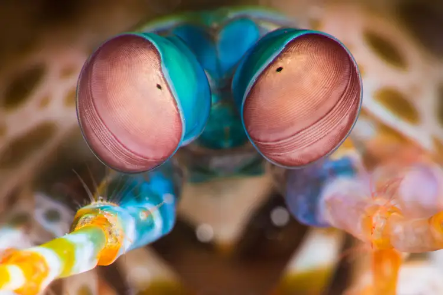
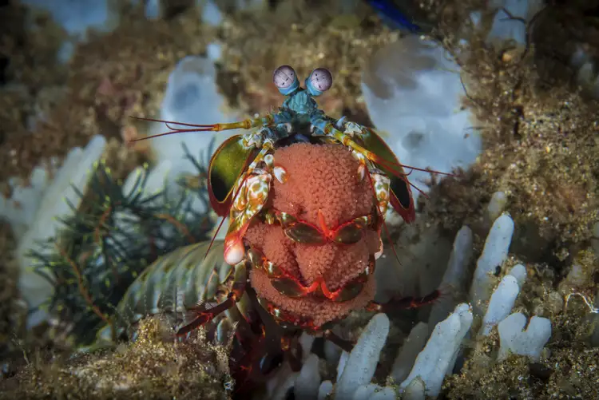

Fatos sobre o Stomatopoda
Informações Gerais
| Reino | Filo | Subfilo | Classe | Subclasse | Ordem |
|---|---|---|---|---|---|
| Animal | Antrópodes | Crustáceo | Malacostraca | Hoplocarida | Stomatopoda |
Olhos de Águia (ou de Stomatopoda)
Os estomatópodes têm a visão mais complexa do reino animal, superando até a das borboletas. O camarão mantis tem olhos compostos montados em talos e pode girá-los independentemente um do outro para examinar seus arredores. Enquanto os humanos têm três tipos de fotorreceptores, os olhos do camarão mantis têm entre 12 e 16 tipos de células fotorreceptoras. Algumas espécies podem até ajustar a sensibilidade de sua visão de cores.
Procriação
Em média, um camarão mantis vive 20 anos. Durante sua vida, ele pode se reproduzir de 20 a 30 vezes. Em algumas espécies, a única interação entre machos e fêmeas ocorre durante o acasalamento. A fêmea põe ovos em sua toca ou os carrega consigo. Em outras espécies, os camarões acasalam em relações monogâmicas e duradouras, com ambos os sexos cuidando dos ovos. Após a eclosão, a prole passa três meses como zooplâncton antes de mudar para a forma adulta.